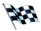

A principal mudança do regulamento de 2009 será a redução da carga aerodinâmica dos carros, com o objetivo de facilitar as ultrapassagens. Serão proibidos os apêndices, o difusor (parte de trás do assoalho) seguirá um desenho padrão, e o aerofólio traseiro será drasticamente reduzido.
O aerofólio dianteiro será móvel e controlado por um motor elétrico. Com isso, os pilotos poderão alterar o ângulo de ataque de acordo com o ponto da pista em que estiverem. O spoiler foi abaixado e alargado, indo até o limite dos pneus.
Para a temporada 2009 será introduzido o KERS (Sistema de Recuperação de Energia Cinética), ele é composto por duas baterias, que armazenarão energia gerada nas freadas, que será reutilizada com a injeção de mais alguns cavalos no motor.
Devido a mudança de regulamento previsto para 2009 pela FIA, a Bridgestone irá produzir pneus slick, é o retorno dos pneus lisos e sem sulcos a categoria.
A Fórmula 1 é a mais popular modalidade de automobilismo do mundo no início do século XXI. Ela tem o objetivo de ser a categoria mais avançada do esporte a motor.É regulamentada pela Fédération Internationale de l'Automobile (FIA), com sede em Paris.
Ao contrário do que muitos acreditam, o registro oficial da categoria consta como Fórmula Um, com o numeral escrito por extenso, mas também se aceita o uso do 1 e do I.
©F1 todos os direitos resrvados